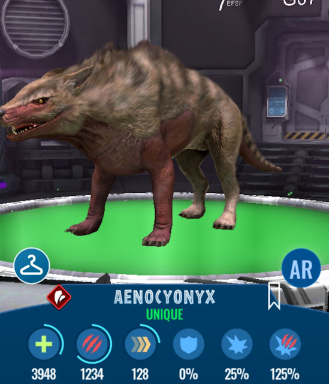
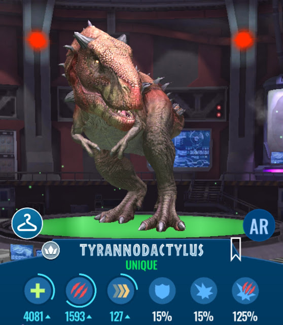
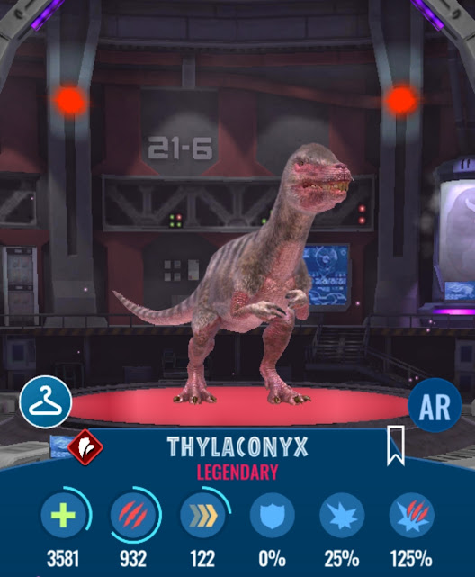

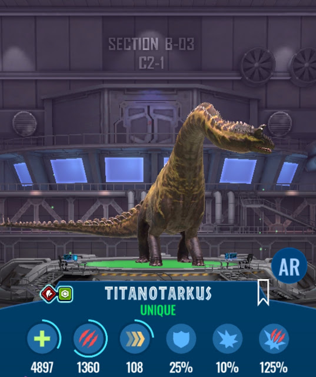
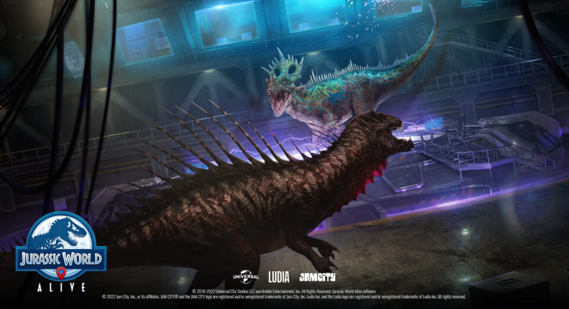

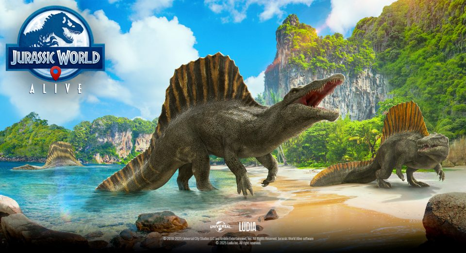

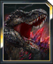


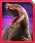
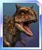
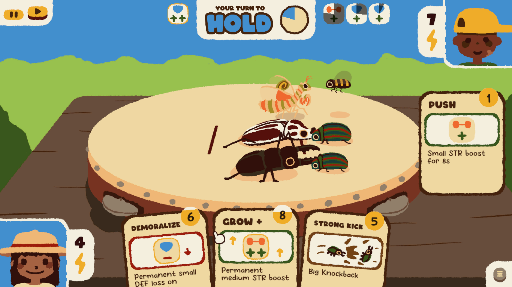
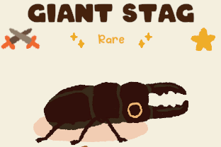

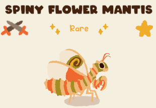
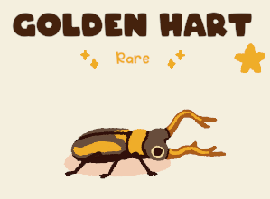
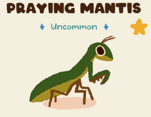


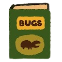
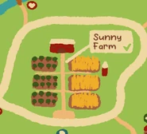
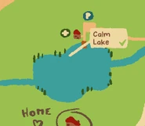
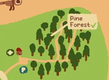
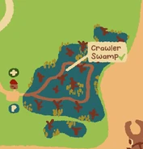
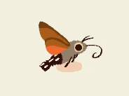
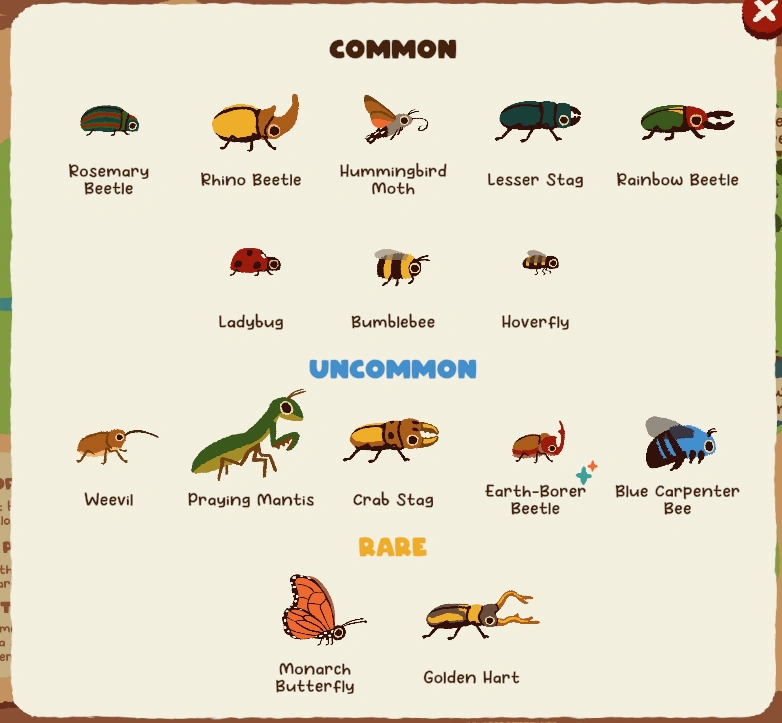
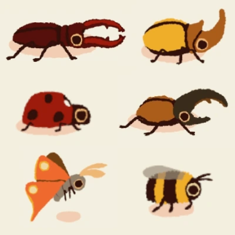
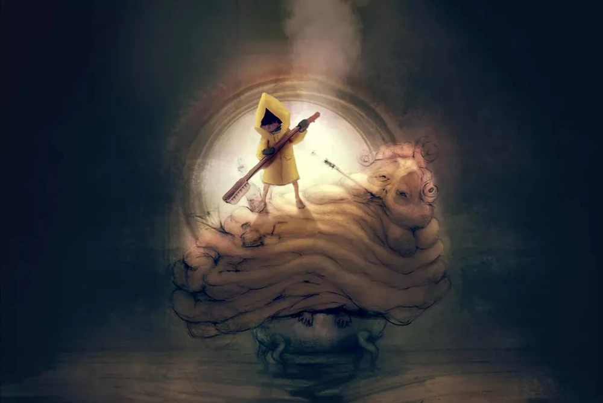
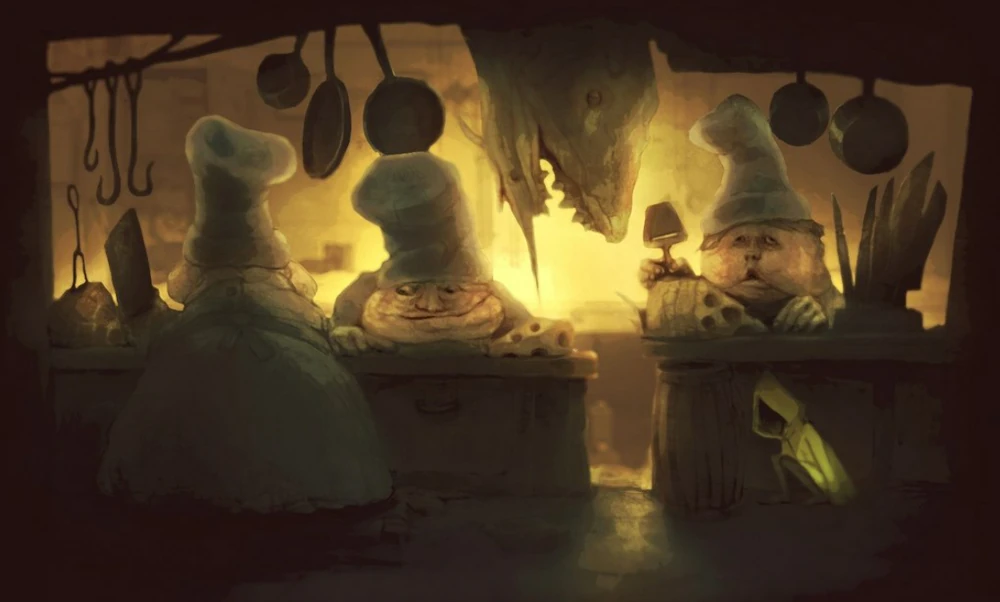


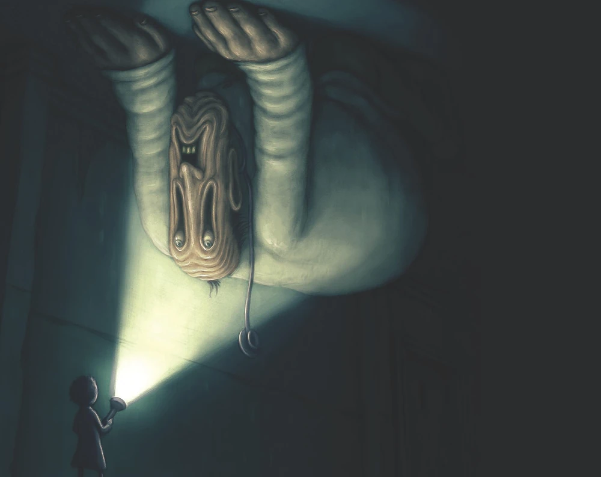

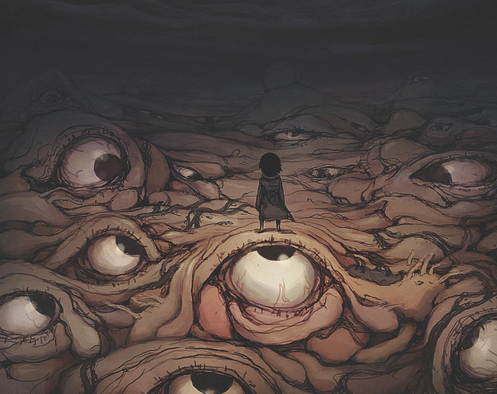
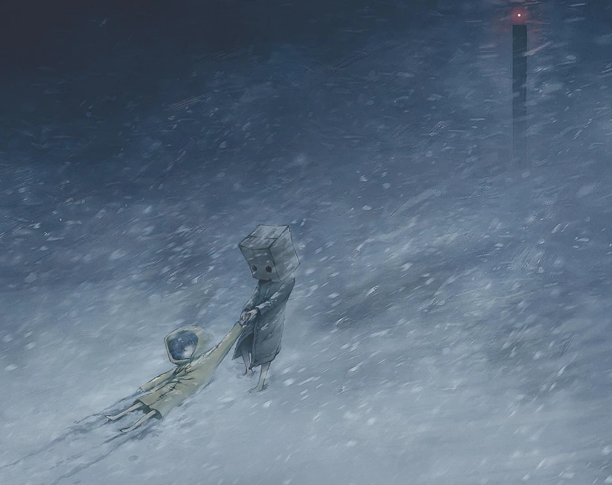


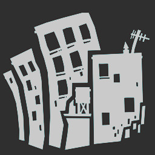


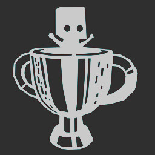
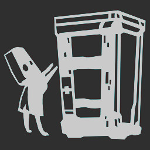
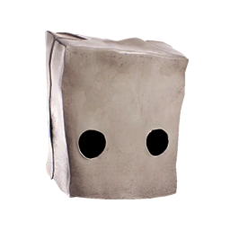


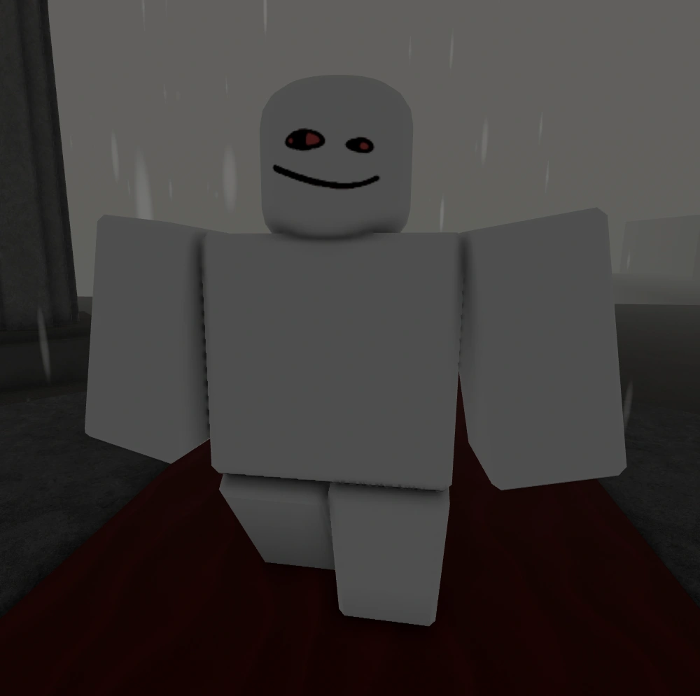

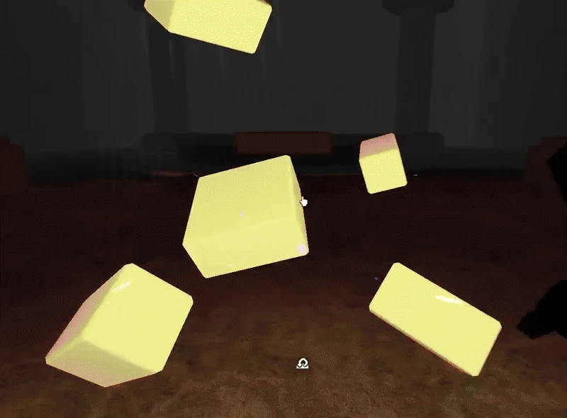
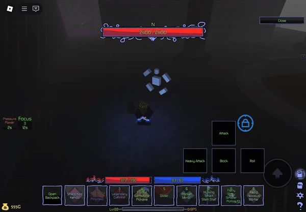
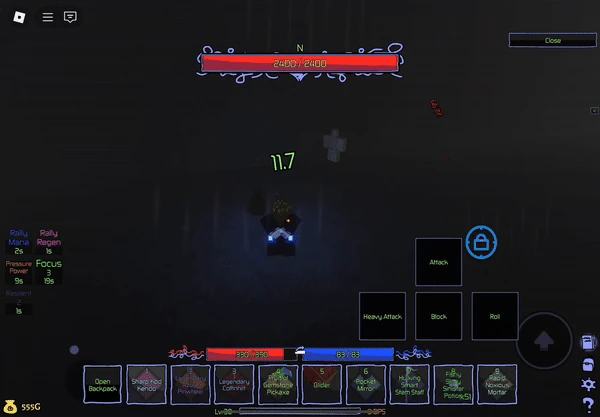
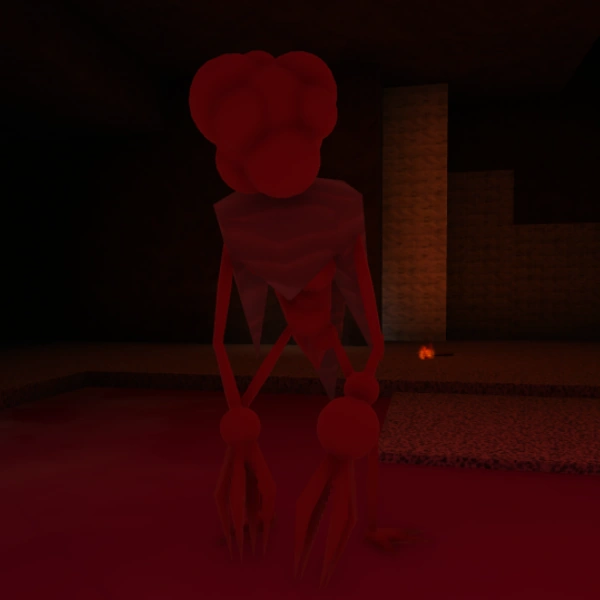
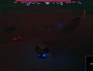


The yellow lizard is one of my favorite lizards because of its AI. These guys use their antenna things to communicate with one another which allows them to perfectly execute ambushes, traps, and pack hunting strategies. I just find it so cool and it looks really good in game too. On top of having some of the coolest and best done AI in the entire game, it also just looks really cool

I'm going to be honest, the main reason I picked this is because of it's design which reminds me of the star nose mole but in a good way. The mechanics isn't as unique, which is reall just an animal that relies entirely on hearing due to being blind. One small detail I like is that this creature is very uncommon which is realistic as cave predators are few are far between due to the lack of food in most subterranian ecosystems.

Red Lizards remind me a lot of my own alien Armato Rege which is an overevolved, incredibly powerful, and aggresive apex predator. That is partly why I like it, even if it is less realistic than the other aliens. Another reason I like it is because of all the unique interactions you can get from it. It can spit projectiles at prey, isn't scared of vultures like other lizards, and it can even steal weapons right out of the player's hand. That and it looks really cool.

The Eel lizard is one of my favorites because it is one of the two aqautic lizards(the other being salamanders) and while salamanders are just lizards that can swim, Eel Lizards are full adapted and specialized to hunt underwater. That is why I like it more than the Salamander and why it's one of my favorite lizards.


Train Lizards(called that due to multiple legs + shaking the ground when they walk) are the biggest lizards and are found in a place called the industrial complex. This lizard just looks so cool and on top of that they have a ton of variations in their design which I find very cool.